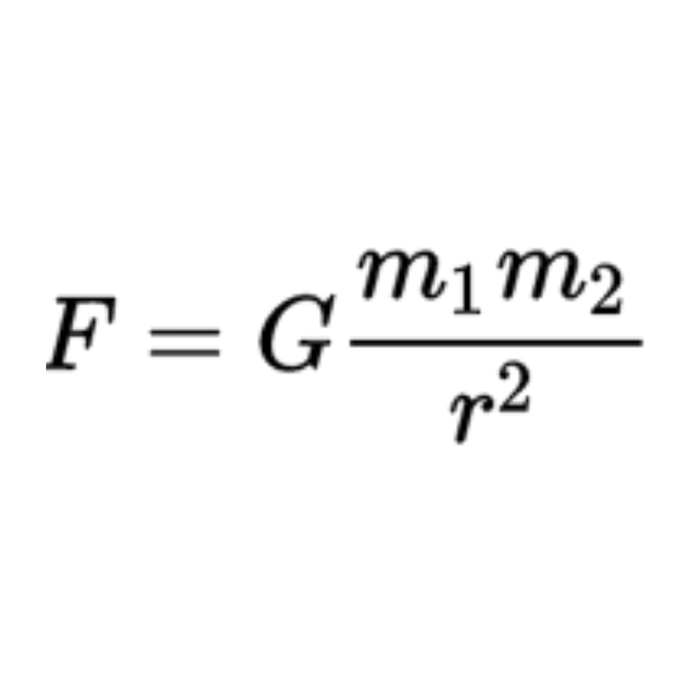

As the titles imply, these book pdfs will provide you with the framework into the mathematical component of astronomy, which admittedly is quite large, as well as the fundamentals needed to understand modern astrophysics. They contain more information than just that of which you would need for celestial mechanics, but are a helpful guide into what will better prepare you for fully comprehending the logistics of it all. Throughout this module, use these books where guided to do so.
Introduction:
Gravity, motion, forces. You've probably heard these words quite often either in class or just generally. We know that they allow us to stay grounded on the earth, allow a car to move forward, and are applied and studied in most sports, but what happens when we apply them on a larger scale? That being the planets, moons, suns, stars, and all other celestial entities out there.
In this module, we will be looking into the math and laws that keep our planets spinning in orbit and keep them from flying into each other. Thank goodness for that!
Task 1:
Newton’s Laws of Motion
An apple falls from a tree and Sir Issac Newton invents gravity, or so the story goes. But seriously, Newton's Laws of Motion describe the relationship between the motion of an object and the forces applied to it. These videos will give a basic understanding of them, and then, later on, you can see how these are applied on a much larger scale with regard to planets, suns, stars, and more.
Reading:
An Introduction To Modern Astrophysics - Section 2.2 , pg 29-32
Task 2:
Newton’s Law of Gravitation
Newtonian Gravity: Crash Course Physics
Newton's Law of gravitation states that any particles of matter attract each other with a force that is directly proportional to the product of their masses and inversely proportional to the square of the distances between their centers. The formula looks as such:

Where F is force
G is the gravitational constant (explanation in videos)
m1 is the mass of objects 1
m2 is the mass of objects 2
r is the distance between their centers.
Try and think of some “Celestial” application to this law. Which two objects would we most likely use this formula with?
Reading:
A Student's Guide To The Mathematics of Astronomy - Section 2.1.1 and 2.1.3
Task 3:
The Ellipse orbital
You may already know this, and it's fine if you don’t, but planets do not orbit their sun or star in a perfect circle. It is more of an oval shape, formally called an Ellipse. An ellipse has two focus points or foci, and the sun will be positioned at one of them. The other is what we call an empty focus. Watch these videos to understand the basic math, so that in the next task, you can connect it to Keplar’s Laws and to how planets orbit their sun.

Reading:
A Student's Guide To The Mathematics of Astronomy - Section 2.3 and 2.4
Task 4:
Kepler’s Laws
Johannes Kepler was a German astronomer and mathematician that developed three laws for planetary motion:
- Planets move in elliptical orbits with the Sun at one of the two foci.
- A planet sweeps the same area of space in the same amount of time no matter where it is along its orbit. This looks something like this:

- The squares of the orbital periods of the planets are directly proportional to the cubes of the semi-major axes of their orbits.
The third law is a bit harder to comprehend so THESE video will specifically explain the concept:
https://www.youtube.com/watch?v=kyR6EO_RMKE
https://www.youtube.com/watch?v=CCsbSq9wlyI
Reading:
A Student's Guide To The Mathematics of Astronomy - Section 2.3
An Introduction To Modern Astrophysics - Section 2.1
Task 5:
Newtonian Mechanics and Revisiting Kepler’s Laws
This section is just a reading that will summarize and go into more depth on everything covered in this module so far. It will connect the concepts more to Celestial Mechanics. You don’t need to go through all the tough derivations; an overall grasp of the concepts should be sufficient
An Introduction To Modern Astrophysics - Section 2.2 and 2.3
Task 6:
Virial Theorem and Conclusionary Notes
With regards to mechanics, the Virial theorem “relates the average overtime of the total kinetic energy of a stable system of discrete particles, bound by potential forces, with that of the total potential energy of the system” (Wiki). Albeit a more complex formula, it brings together Quantum Mechanics and Quantum Chemistry, to pull it onto the plane of Celestial Mechanics.
An Introduction To Modern Astrophysics - Section 2.4
Just as a little extra, here are some notes on Newtonian Mechanics to help you summarize your knowledge.